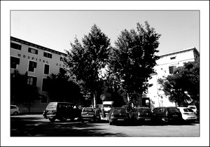

La Plaza del Hospital
La Plaza del Hospital
La actual plaza del Hospital, llamada así porque en ella se ubica el Hospital General, creado en 1468 unificando en un mismo lugar todos los hospitales de la ciudad. En el complejo del Hospital General destaca la iglesia de la Sang en donde se encuentra la imagen del Cristo de la Sang del siglo XVI al cual se le atribuye multitud de milagros.
Antiguamente esta plaza era conocida como “l’era del Hospital” ya que había una era donde se molía trigo donde se encuentra una de las entradas de la Misericordia.
Debajo de la plaza del Hospital se encuentra un bunker antiaéreo de tiempos de la Guerra Civil Española. Podemos observar la puerta de acceso en uno de los lados de dicha plaza junto a una fuente.